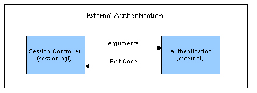

Utilizzo dell'autenticazione esterna o dell'esclusione dell'autenticazione
Panoramica
Per impostazione predefinita, l'autenticazione Urchin viene eseguita quando il controller di sessione di Urchin (session.cgi) chiama il file binario "auth" posizionato nella directory "bin" dell'installazione di Urchin. Il file binario esegue una query nel database di configurazione e confronta il nome utente e la password forniti con quelli memorizzati nella configurazione. Al controller di sessione viene restituito un codice che indica se l'operazione è riuscita o meno. La posizione del file binario di autenticazione può essere controllata con una modifica della configurazione. Questa struttura modulare consente agli amministratori di chiamare un programma di autenticazione esterno invece del file binario "auth" predefinito.

Come mostrato nel diagramma precedente, questo programma di autenticazione esterno può eseguire tutte le funzioni di autenticazione desiderate, tra cui "LDAP" e altre chiamate al database. Se il programma viene eseguito dallo stesso utente che ha effettuato l'accesso a "urchinwebd" (server web Apache di Urchin) ed è conforme ai requisiti di input/output, Urchin può essere modificato facilmente in modo che utilizzi una forma diversa di autenticazione.
Specificazione della routine di autenticazione
Per configurare la routine di autenticazione chiamata dal controller di sessione, modifica il file "etc/session.conf" ubicato nell'installazione di Urchin. Questo file contiene parametri configurabili che controllano il comportamento del controller di sessione, ad esempio quale routine chiamare per l'autenticazione. Modifica la riga
AUTHENTICATION: ../bin/auth
Sostituisci "../bin/auth" con il percorso della tua routine di autenticazione. Accertati che la routine di autenticazione sia eseguibile dallo stesso utente che ha effettuato l'accesso a "urchinwebd".
Requisiti di input/output
Quando il controller di sessione chiama la routine di autenticazione, vengono passati il nome utente, la password e l'indirizzo IP remoto dell'utente come argomenti della riga di comando, in questo modo:
argv[1] = username
argv[2] = password
argv[3] = remote_addr
La routine di autenticazione esterna può scegliere di ignorare qualsiasi parametro o tutti i parametri, ma le tipiche routine di autenticazione prendono in considerazione almeno i primi due. Dopo aver eseguito l'autenticazione desiderata, la routine restituisce il codice zero se l'operazione è riuscita e -1 se non è riuscita.
Exit Code
0 = successful authentication
-1 = authentication failed
L'interfaccia di autenticazione riportata in precedenza consente agli amministratori di personalizzare facilmente le proprie routine per l'autenticazione degli accessi utente.
Esclusione dell'autenticazione
Utilizzando le tecniche descritte in precedenza, l'autenticazione Urchin può essere esclusa di proposito. Nel caso in cui un provider di hosting desideri utilizzare l'intero sistema Urchin per controllare utenti e gruppi, ma ha già autenticato l'utente prima che quest'ultimo acceda a Urchin, è possibile escludere l'autenticazione per evitare un doppio accesso. Se l'host può garantire che l'accesso al sistema Urchin venga controllato da un portale di autenticazione e che il nome utente non possa essere sabotato, l'host può escludere l'autenticazione utilizzando la seguente tecnica.
Per escludere l'autenticazione, crea una routine di autenticazione esterna fittizia che restituisce sempre uno zero. Ad esempio, il codice perl può apparire come segue:
#!/usr/bin/perl
exit(0);
Punta il controller di sessione su questa routine di autenticazione fittizia modificando il file "etc/session.conf" nel modo descritto in precedenza. Successivamente, fornisci semplicemente un link simile al seguente:
http://hostname:9999/session.cgi?action=login&user=paul
Modifica il link in modo che punti al nome host e alla porta reali, quindi modifica l'utente in modo che punti al nome utente o alla variabile desiderata. La routine di autenticazione fittizia approverà automaticamente questo accesso. Per evitare problemi di sicurezza, utilizza questo metodo con cautela.
Nota per gli utenti Windows
Per fornire una funzionalità simile negli ambienti Windows in cui Perl non è installato, nell'area Helper Scripts del sito web dell'assistenza Urchin è disponibile un semplice file binario denominato noauth.exe. Questo file è un "no-op": restituisce semplicemente uno stato di operazione riuscita quando viene chiamato. Accertati di capire le implicazioni relative alla sicurezza prima di implementare questa soluzione.